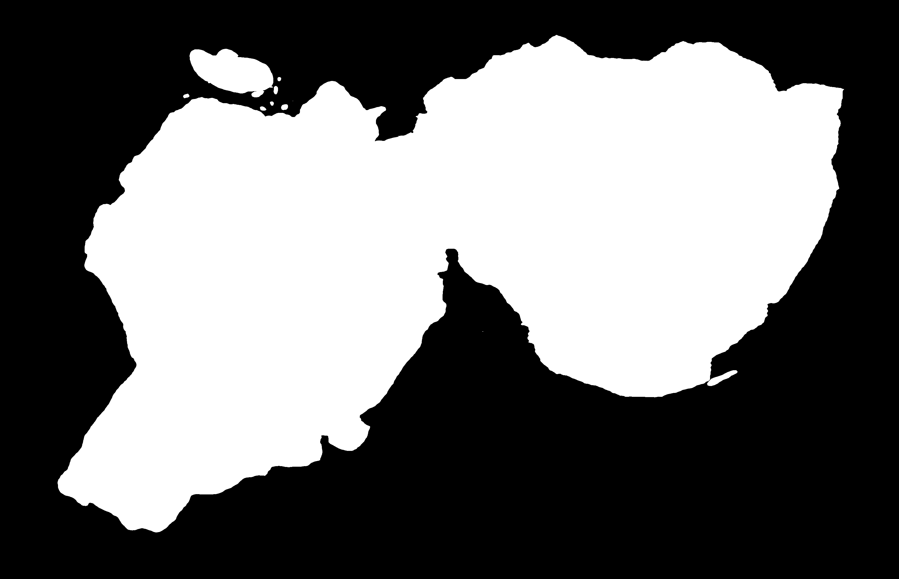
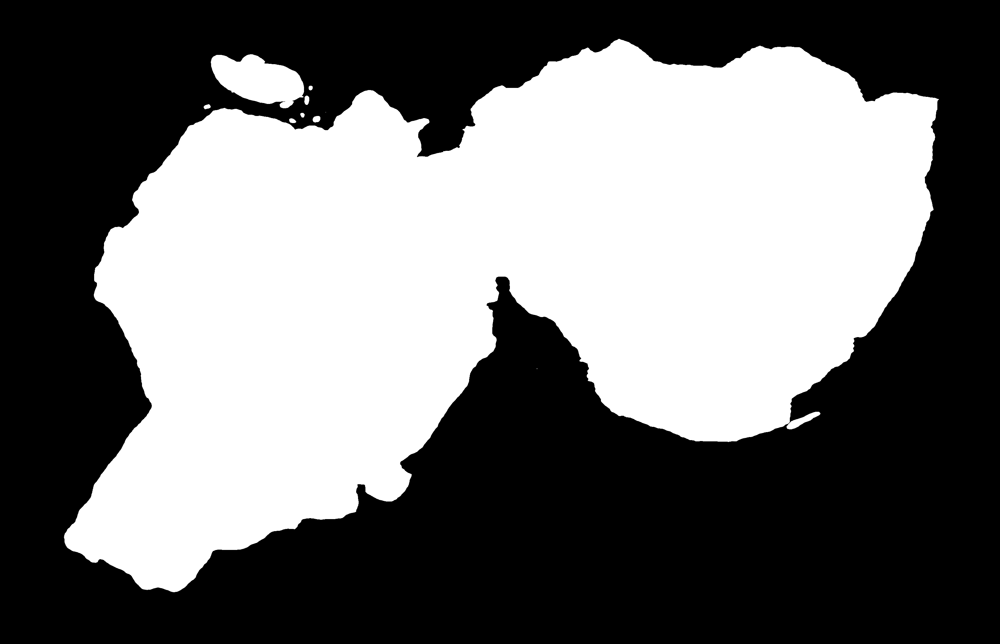
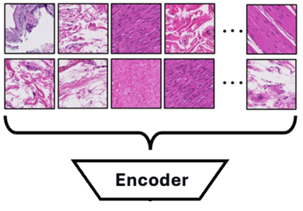

Features
Fast Tissue Segmentation
AtlasPatch efficiently segments tissue regions from whole-slide images using a fine-tuned Segment-Anything2 (SAM2) model.
 

Patch Coordinate Extraction
AtlasPatch efficiently extracts patch coordinates from the generated SAM2 tissue masks.

Patch Embedding
Can perform feature embedding with numerous feature encoders available, with the use of custom encoders also possible.
Patch Writing
Can save and export tissue patch images for patch visualization or for downstream task use.